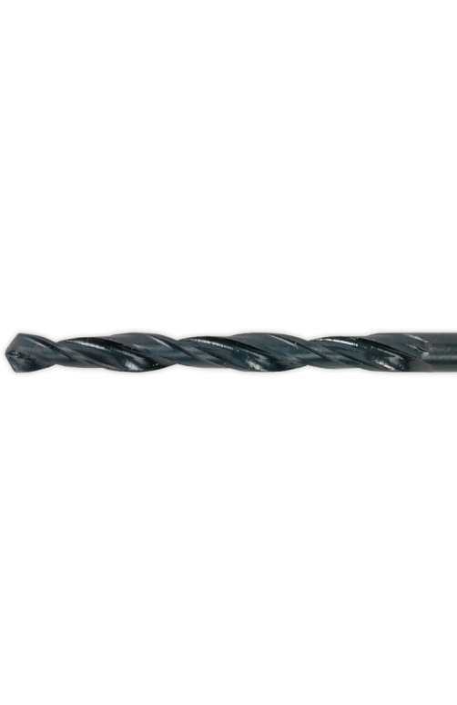

-
Металлорежущий инструмент
Компания «Дипар» - это поставка полного спектра инструмента для металлообработки собственного производства и известных мировых производителей.
 Подробнее -
Ручной
инструментКомпания «Дипар» - это поставка полного спектра инструмента для металлообработки собственного производства и известных мировых производителей.
-
Абразивный
инструментКомпания «Дипар» - это поставка полного спектра инструмента для металлообработки собственного производства и известных мировых производителей.
Классификация разверток
В металлообработке применяются различные типы разверток, подразделяемые по следующим признакам:
Форма обрабатываемого отверстия:
- Цилиндрические развертки
- Конические развертки под различные типы конусов
- Развертки ступенчатые
Точность развертки отверстия:
- Номер квалитета для цилиндрических инструментов
- Уровень обработки отверстия (черновой, промежуточный, чистовой) – для конических
- Регулируемые развертки – раздвижные, шкворневые или разжимные
Способ зажима:
- Ручные с квадратным хвостовиком
- Цилиндрический хвостовик (машинные развертки)
- Конические машинные
- Машинные насадные
Также развертки подразделяются по количеству режущих кромок, материалу и форме канавок для отвода стружки (спиральные или прямые)
Мы работаем с этими производителями
В металлообработке применяются различные типы разверток, подразделяемые по следующим признакам:
Каталог товаров
Посмотреть полный каталог
ПерейтиКонструкция развертки
Высокое качество обработки обеспечивает конструкция развертки – большое количество режущих кромок обеспечивающих небольшой припуск при снятии металла. Процесс резания осуществляется при вращении и одновременном поступательном движении инструмента вдоль оси обрабатываемого отверстия.
Инструмент имеет от 6 до 16 зубьев неравномерно (как правило) распределенных по окружности для повышения качества обработки. Рассмотрим конструкцию на примере ручной развертки цельной с хвостовиком цилиндрической формы. Инструмент состоит из трех основных частей – рабочей, шейки и хвостовика. В свою очередь рабочая часть развертки состоит из направляющей, режущей и калибрующих частей, а также обратного конуса. Основную часть процесса выполняет режущая часть, которая у ручного инструмента значительно длиннее, чем у машинного.
Основные приемы работы с развертками
Сверло для подготовки отверстия подбирается под диаметры разверток по металлу. Обязательно должен быть небольшой припуск – сверло должно быть меньше на 0,2 – 0,3 мм при черновой развертке, и не более чем 0,05 – 0,1 мм при чистовой. Значения припусков, более указанных, могут стать причиной быстрого износа заборной части развертки, ухудшению точности результата и качества поверхности.

При ручной развертке:
- Развертка крепится в воротке и смазывается
- Заборная часть должна входить таким образом, чтобы полностью совпали оси развертки и отверстия.
- Для проверки положения развертки можно использовать угольник в двух плоскостях расположенных перпендикулярно по отношению друг к другу
- Вращение начинайте вправо с небольшим давлением сверху.
- Вращение осуществляйте плавно, на небольшой скорости, без рывков. Не ускоряйте вращение даже при легком ходе.
- Обратное вращение недопустимо, так как возможна поломка режущих кромок и задиров на поверхности отверстия. Развертка осуществляется за один проход с одной стороны
Советы при машинной развертке:
- Развертка крепится так же, как и сверло. Сам процесс сходен со сверлением и желательно его выполнять без смены установки детали, сразу после подготовки отверстия.
- Часто развертка крепится в качающихся державках, что позволяет инструменту самоцентрироваться по оси отверстия.
- Желательно использование автоматической подачи, скорость резания должна быть в 2-3 раза ниже, чем при сверлении.
- Необходимо использование значительного количества смазки.
- Чем ниже количество оборотов и скорость подачи – тем выше качество отверстия и стойкость инструмента.
Действующие ГОСТы
Определяет параметры развертки ГОСТ 29240-91. Допуски регулирует ГОСТ 11173-76. Так же на каждый тип развертки есть свой действующий стандарт определяющий её конструкцию и размеры. На ручные цилиндрические - ГОСТ 7722-77, на машинные цельные – ГОСТ 1672-80 и т. д. для всех типов инструмента.
Каталог товаров
-
Название каталога в две строчки
Скачать (100 мб) -
Название каталога в две строчки
Скачать (100 мб) -
Название каталога в две строчки
Скачать (100 мб) -
Название каталога в две строчки
Скачать (100 мб) -
Название каталога в две строчки
Скачать (100 мб)
Баннер

Ссылки
-
-
Услуги
- Технологический аудит
- Написание технологии и управляющих программ для металлообработки
- Проектировка и изготовление инструмента под заказ
- Испытания и подбор ручного инструмента для металлообработки, на базе нашей лаборатории
- Пусконаладочные работы пневмоинструмента
- Гарантийное и постгарантийное обслуживание электро и пневмоинструмента
-